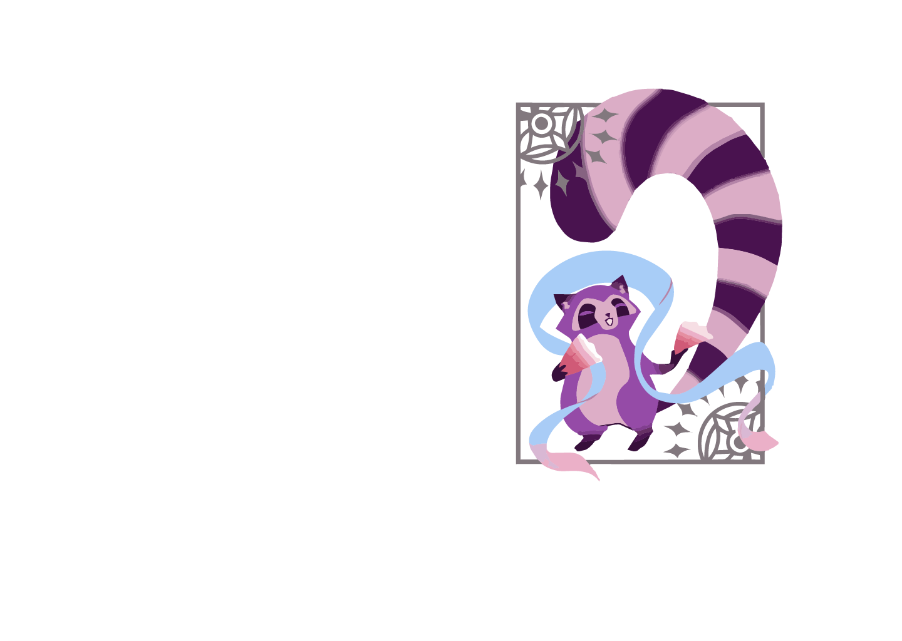

Contents
AUTHOR

I'm Lien Anh, though most people know me as Lotus Do. I'm a first-year Digital Media student at RMIT Saigon. Right now, I'm diving into everything from 2D/3D design to UI/UX, exploring different creative paths to find where I truly belong